Sjellebro
Höhe ü. d. Erdboden: 150 cm
Breite unten: 113 cm
oben: 22 cm
Dicke unten: 64 cm
oben: 37 cm


64 - Sjellebro - Letztes Update 27.07.2025
| Navidaten: 56.40382 10.24121 oder: Randersvej 190, 8544 Mørke |
Wo die Hauptstraße zwischen Randers und Ebeltoft die Alling Å kreuzt steht unmittelbar südöstlich des alten Sjellebro Kro ein großer Stein, auf dessen einer Breitseite eine Trollmaske eingehauen ist (ca. 50m von der Straße/Brücke entfernt).
Der Granitstein lag Jahrhunderte unentdeckt auf der Wiese, bis er 1951 aufgerichtet wurde und dabei die Maske, im Stil der Zeit um 1000 zum Vorschein kam. Es ist anzunehmen, dass es sich bei dem Fundort um den ursprünglichen Standort des Steines handelt.
Über diesen Link findet man einen Flyer, dessen Inhalte vor Ort als Infotafeln aufgestellt sind. Darauf ist auch dieser Text - in deutscher Sprache - zu finden:
"Viele hundert Jahre lang wusste niemand etwas von dem Maskenstein, der umgestürzt am Ufer der Alling Å lag. 1951 arbeiteten der Grundeigentümer, Aage Hilbert Sørensen (*11.09.1912 - 31.03.1996 - link-Lives),
Bildquelle: Limeegnsarkiv - Erlaubnis zur Nutzung / Veröffentlichung 05.12.2024 erteilt
und sein Sohn auf der Wiese. Ihre Brotzeit nahmen sie auf dem Stein ein, wobei der damals 11-jährige Erik Sørensen seine Flasche mit Limonade umstieß. Die Flüssigkeit lief über den Stein und sammelte sich in den Vertiefungen, die dadurch deutlich sichtbar wurden. Zufällig arbeitete der Archäologe Harald Svenn Langberg (*03.08.1919 - 21.10.2003, Archäologe, Historiker) in der Nähe. Als er von dem Stein hörte, fuhr er hin. Er ließ die Autoscheinwerfer über den Stein streichen und konnte das Motiv deutlich erkennen. Auf dem Stein trat ein Gesicht mit großen drohenden Augen, einem spitzen Hut auf dem Kopf und einem geflochtenen Bart hervor. Die Maske wurde in der späten Wikingerzeit um 1000 n. Chr. im sogenannten Mammenstil in den Stein eingemeißelt."
Nach der Entdeckung der Maske auf dem Stein wurden an dieser Stelle archäologische Untersuchungen durch das vorhistorische Museum in Århus. Zunächst im Jahr 1952 eine Probegrabung unter der Leitung von P.V. Glob (*20.02.1911 - 20.07.1985, Prähistorischer Archäologe, Reichsantiquar und Leiter des Nationalmuseums Kopenhagen 1960-81 - link-Lives)
Bildquelle: Det Danske Filminstitut - Lizenz: CC-BY-SA
Die führte bereits zu einer vielversprechenden Entdeckung. Deshalb kam es im Folgejahr 1953 zu einer größeren Ausgrabung unter der Leitung von Thomas Geoffrey Bibby (*14.10.1917 - 06.02.2001, Archäologe). Die Ausgrabungen brachten eine ganze Serie von übereinander liegenden Holz- und Steinbrücken zutage, die alle über die feuchte Wiese und den Wasserlauf führten. Die gepflasterten Übergänge wurden wahrscheinlich in der frühen Eisenzeit angelegt oder sind vielleicht noch älter. Die oberste und damit jüngste Brücke wies die beste, wohlbehaltene Konstruktion auf. Sie wurde in der späten Wikingerzeit gebaut und stammt damit aus derselben Zeit wie der Maskenstein. Wollte man die Au überqueren, so musste man die Brücke benutzen und an der Maske auf dem Stein vorbei. Im Jahr 1957 - diesmal unter der Leitung von Georg Kunwald (*1918 - 2013, Archäologe) wurden noch in der näheren Umgebung des Steins Untersuchungen durchgeführt. In den Jahren 1980, 1982, 1984 und 1991 wurden kleine Untersuchungen auf Veranlassung des Nationalmuseum in Kopenhagen durch Mogens Schou Jørgensen durchgeführt.
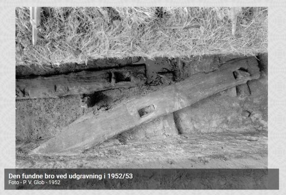
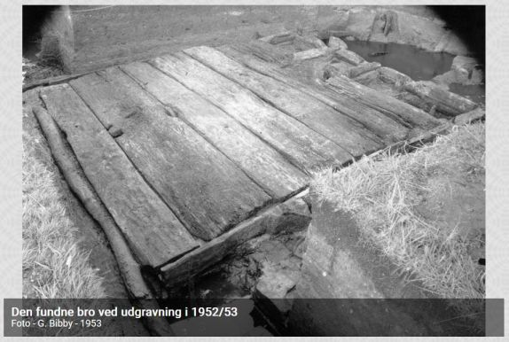
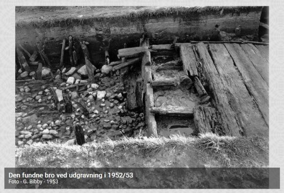
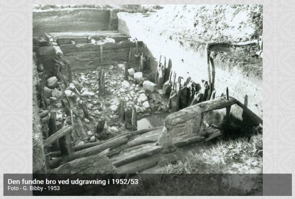
Bildquelle: Limeegnsarkiv - Om Sjellebrostenen - hier sind insgesamt sieben sw Fotos der Ausgrabungen 1952 - P. V. Glob und 1953 - G. Bibby zu sehen.
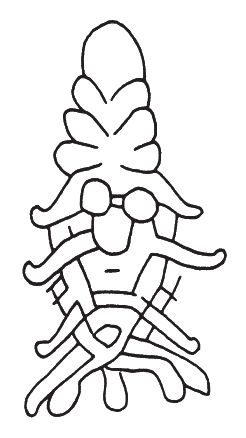
Mit seinem spitzen Kinn, seinem geflochtenen Bart, seiner u-förmigen Nase und seinen großen, runden leeren Augenhöhlen hat das Maskengesicht sicherlich eine groteske und gleichzeitig angsteinflößende Wirkung auf den Mensch der Wikingerzeit gehabt. Dies wird wohl auch in der Absicht desjenigen gelegen haben, der den Stein errichtete um die Straße und die Brücke zu hüten, die auch damals über den Bach führte.
Der Sage nach war der Stein der Sitz des Wassermannes, der jährlich seine Menschenopfer forderte. Einmal vergingen sechs Jahre, bevor ein Mensch ertrank. Sechs Jahre lang erscholl der Ruf des Wassermannes: Die Zeit ist gekommen, aber der Mann ist nicht gekommen! vergebens. Im siebten Jahr fuhr ein Wagen mit Heimkehrern vom Markt in Randers durch die Alling Å, und alle sieben Personen im Wagen kamen um. Die Rechnung war wieder aufgegangen.
Heute schaut der Wassermann vergeblich nach der Hauptstraße hinüber, die den Verkehr auf einer Brücke aus Granit und Beton sicher über die Alling Å hinwegführt. Die Trollmaske wirkt auch nicht mehr so abschreckend, da die Steinoberfläche etwas verwittert ist. Bei gutem Seitenlicht ist sie jedoch noch gut zu erkennen.
Der wikingerzeitliche Weg und der unmittelbar darunter liegende Weg waren beides Holzwege, deren Fahrbahnen aus schweren Schwellen bestanden, die auf Langhölzern ruhten, die wiederum auf Querhölzern angebracht waren, unterstützt von eingeschlagenen Pfosten. Diese beiden Wege sind auf richtigen Brückenkonstruktionen über den Bach geführt worden.
Die zwei unteren Straßen waren mit Steinen belegt, die auf einer Lage Holzbalken und Zweigen ruhten und seitlich von schweren Feldsteinen begrenzt waren, was bei älteren eisenzeitlichen Straßen oft der Fall war. Während diese beiden Straßen in Funktion waren, konnte man nie trockenen Fußes über den Bach gehen, da dies nur eine Furt war.
Zwischen der heutigen Straße und dem Altertumsweg lag noch ein fünfter Weg, der von der Zeit König Christian IV. (*12.04.1577 - 28.02.1648)
 Bildquelle:
Wikipedia - Lizenz:
Public Domain
Bildquelle:
Wikipedia - Lizenz:
Public Domain
bis 1860 in Gebrauch gewesen ist. Heute ahnt man diese Straßen allenfalls als leicht erhöhte Bahnen in den niedrigen Bachwiesen.
Über diesen Link kommt man auf einen 11-seitigen Instandsetzungsbericht in dänischer Sprache aus dem Jahr 2013. Der reich bebilderten Abhandlung ist zu entnehmen, dass zur Erhaltung des Maskensteins Maßnahmen für notwendig erachtet wurden. Allerdings war nur ein Anheben, aber kein Versetzen des Steins von der zuständigen Stelle erlaubt worden. Keinesfalls durfte ihm ein Betonfundament o.ä. verpasst werden. Der Maskenstein musste vor den bisweilen doch heftigen Wasserständen, insbesondere in den Wintermonaten, die dem Stein natürlich enorm zusetzten, geschützt werden. Also wurde er am 09. April 2013 nur mit Schaufeln ausgegraben, mit Maschinenkraft angehoben und zur Seite gelegt, das lose Erdreich abgetragen und dann eine Kies Aufschüttung vorgenommen, die mit schwerem Gerät ordentlich verdichtet wurde. Nach Abschluss der Arbeiten wurde der tolle Stein wieder an seinen alten Platz gesetzt. Die Steinmaße werden mit 170 cm Höhe, 100 cm Breite und ca. 3 Tonnen Gewicht angegeben. Von vielen Menschen war angefragt worden, ob man die Maske nicht hätte ausmalen lassen, um sie darüber besser erkennen zu können. Früher war die Ritzung wohl zumindest zeitweise mit weißer Kreide nachgezeichnet gewesen, wie man auf historischen Fotos erkennen kann. Aber die zuständige Behörde hat zu einer solchen Maßnahme keine Genehmigung erteilt! Gegenüber früher sitzt er nun wohl ca. 45 cm höher, ohne dass man das erkennen kann, was ja auch beabsichtigt war. Ob der gewünschte Erfolg in den letzten Jahren darüber auch wirklich eingetreten ist, konnte ich noch nicht in Erfahrung bringen.
Eingebunden war diese Instandsetzung in ein großes Renaturierungsprojekt im Alling Ådal. Beteiligt an der Sichderungsmaßnahme waren die Firmen Morsø Skov og Naturservice sowie Jacobsen og Blindkilde und natürlich verschiedene Institutionen (Museum Sydøstdanmark, Naturstyrelsen, Kulturstyrelsen, Aalborg Arealforvaltning).
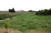 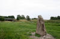 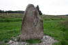 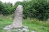 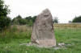 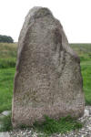


Aufnahmen von meinem Besuch vor Ort am Donnerstag, 22.08.2013, also bereits relativ kurz nach der o.a. Instandsetzungsmaßnahme, die ja am 09.04.2013 durchgeführt wurde.
Im Rahmen meiner 2022er Jütland Wikinger Tour war ich am Mittwoch, 15.06.2022, mal wieder vor Ort. Aber der Maskenstein war da gerade von zahlreichen Kühen umringt, die irgendwie grimmig in meine Richtung schauten. Zu Glück zogen sie kurz darauf von dannen und beobachteten mich aus sicherer Distanz. Das war mir auch sehr recht! Die Steinoberfläche war in einem sehr schlechten Zustand - Moos- und Flechtbewuchs - und das angrenzende Wäldchen hat den Stein schon fast geschluckt. Dass da niemand aus der Region Interesse hat den Stein ehrenamtlich zu pflegen! Ich habe dem verantwortlichen Museum heute - 05.03.2022 - mal eine Mail mit Fotos geschickt. Vielleicht interessiert das dort jemand - mal schauen. Bis heute - 26.07.2025 - gab es allerdings keine Antwort.
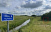 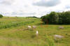 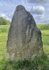 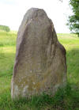 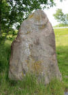 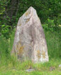


Erfreulicherweise meldete sich Felix Rickert aus Kiel per E-Mail und berichtete mir, dass er am 24.07.2025 vor Ort war. Der Stein sei aktuell "freigeschnitten" und auch sehr gut erreichbar. Bilder bekam ich heute - 27.07.2025 - nachgereicht. Er hat auf dem "The Megalithic Portal" eine eigene Seite zu diesem Maskenstein eingestellt. Hier seine übermittelten Fotos. Vielen lieben Dank! :-)
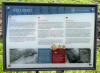 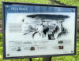 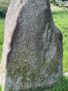


Über die Digitalen Sammlungen des Nationalmuseums in Kopenhagen finden sich aktuell vier Fotografien von dem Maskenstein / Lizenz jeweils CC BY-SA 4.0 / jeweils von mir verkleinert
1951 - Fotograf V. Arnholtz / 1951 - Fotograf Harald Langberg / Jahr unbek. Lennart Larsen / 08.12.2015 - Roberto Fortuna
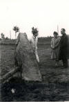 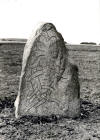 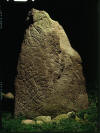 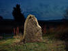


Die Infos aus der Dänischen Runendatenbank finden sich im Internet hier, obwohl sich keine Runenzeichen auf dem Stein befinden.
Der entsprechende Eintrag zu dem Maskenstein in "Fund og Fortidsminder" ist hier verlinkt.
Über diesen Link finden sich zu dem Maskenstein Informationen des Forschungsprojektes "Runes" der Akademie der Wissenschaften zu Göttingen, auch wenn der Stein inschriftslos ist.
Über diesen Link trifft man auf eine - in dänischer Sprache gehaltene - Abhandlung zur 3D Digitalisierung des Sjellebro Maskensteins - "Runesten som digital kulturarv - Tre eksempler fra Djursland. Thomas Eggers-Kaas, Museum Østjylland Årbog 2020".
Basierend auf diesem Artikel kann man sich über diese Webseite von dem Sjellebro Maskenstein ein 3D Modell als pdf-Datei downloaden und die dann in einem pdf-Reader anschauen, drehen, zoomen usw. Ebenfalls als 3D Datei werden die beiden Runensteine von Mygind und Rimsø angeboten. Schaut's euch doch einfach mal selbst an!
Allerdings ist das Ganze etwas gewöhnungsbedürftig: Zunachst auf der Webseite eine der drei Örtlichkeit auswählen, dann warten bis die PDF Reader Ansicht zu sehen ist - es läuft ein Verlaufsbalken von links nach rechts und ein Blatt wird aufgerufen, aber es tut sich dann nix, auch wenn es so aussieht als lädt da was. Deshalb dann darüber auf "Download" über das sog. Hamburger Menü "" gehen - die pdf-Datei "Sjellebro.pdf" kann nun am eigenen PC geöffnet werden.
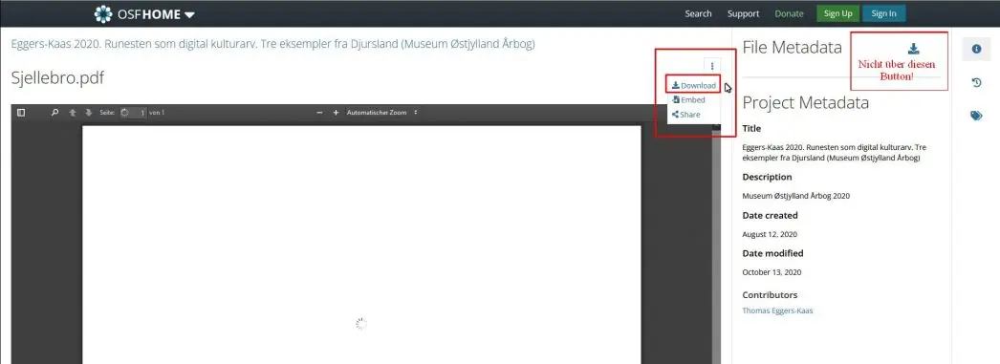
Aber es passiert auch jetzt erst einmal nix. Man muss erst noch dem "Inhalt einmal vertrauen" und irgendwie öffnet sich dann plötzlich die Ansicht. Die kann man nun in der Pdf drehen und zoomen usw. - 26.07.2025 - Nachtrag: Das klappte heute bei mir so auch nicht. Erst nach dem Abspeichern auf dem eigenen PC und dem anschließenden Öffnen der Datei mit Adobe Acrobat klappte es erfreulicherweise wieder! :-)
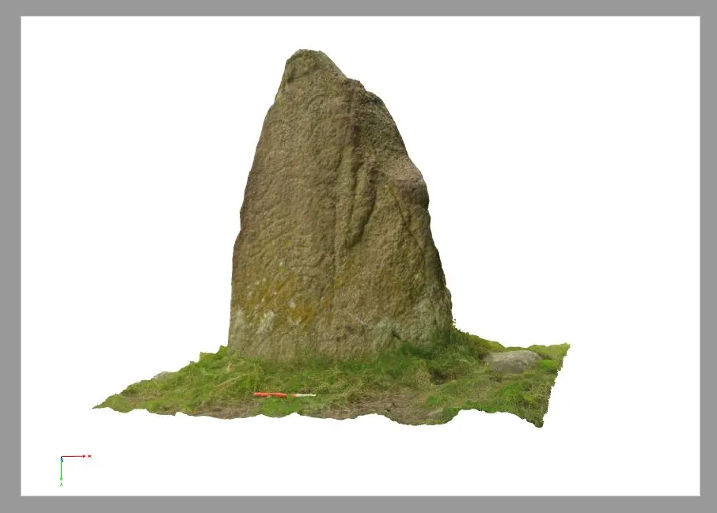
Im Internet kann man über Google StreetView den Maskenstein aus dieser Perspektive anschauen, zumindest seinen Standort ausmachen - Screenshot vom 05.03.2023 - Google-Aufnahme vom Dezember 2021:
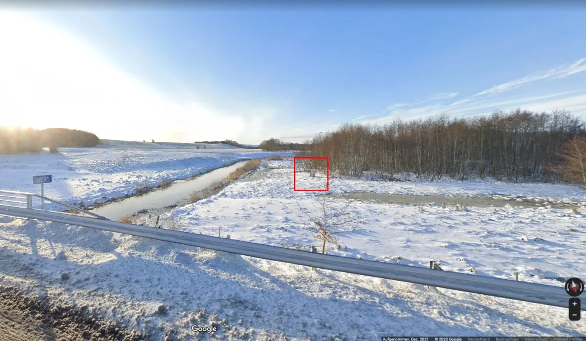
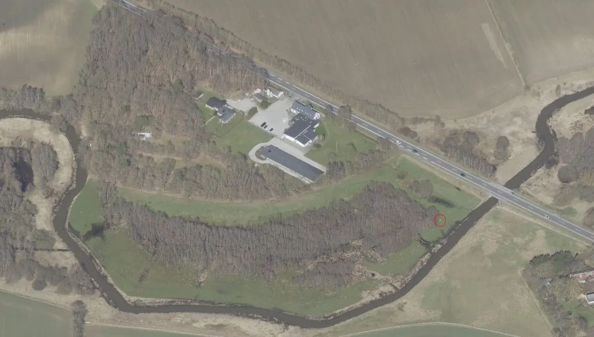
Bildquelle: Skråfoto - Luftaufnahme vom 01.04.2023 - Bild zugeschnitten und Standort Maskenstein von mir rot eingekreist
Skråfoto ist eine Webanwendung, die von Klimadatastyrelsen weltweit kostenlos bereitgestellt wird - Lizenz: CC BY 4.0 . Die Aufnahmen werden seit 2017 alle zwei Jahre erneuert und neben einer Senkrechtaufnahme wird ein Schrägbild aus jeder Himmelsrichtung angeboten, das man über eine Adresssuche aufrufen kann. Der Maskenstein steht übrigens knapp 47 m von der Straße entfernt.
Literaturhinweis:
Kunwald, Georg - Tiden er kommet - men manden er ikke kommet! Skalk 1957, Nr. 4, S. 5-9.
Lime Egnsarkiv - Om Sjellebrostenen - via Internet - hier sind insgesamt sieben sw Fotos der Ausgrabungen 1952 - P. V. Glob und 1953 - G. Bibby zu sehen.
Nicolaisen, Frits - Den bundne Dæmon: Om Sjellebrostenen og de øvrige maskesten - Historisk Årbog fra Randers Amt 1987 - S. 12-24
Danske Fortidsminder - Vikingetid Sjelbro - via Internet - Informationsseite mit Bild-, Karten- und Textmaterial
Sjellebro - billedsten og vej - Webseite von Slots- og Kulturstyrelsen - aberufen 06.03.2023
Fortidsmindeguiden - En enestående sten - via Internet - 7-seitige pdf Datei in dänischer Sprache
Maskendarstellungen der Wikingerzeit - Thorsten Lemm - in: Offa 61/62 - 2004/05 - S. 309-352
Wirkmächtige Kommunikationsmedien - Menschenbilder der Vendel- und Wikingerzeit und ihre Kontexte - Michaela Helmbrecht - 2011 - S. 282 / Fußnote 1019 - S. 284 - Nr. 126 im Katalog